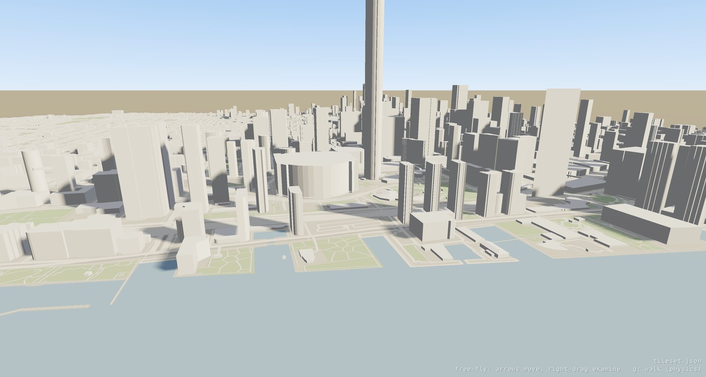

A city-sized dataset to fly, walk and page
through comes from OpenStreetMap building footprints, extruded to
3D Tiles by
osm-data-3d-tiles (Node,
ISC-licensed) and viewed with oglc-view like
any other tileset. The generator reads its buildings from a
vector-tile server rather than from OSM directly, so an export is five steps: choose
the area, put the buildings in front of the generator as MVT tiles, run the generator,
lay the output out so its URIs resolve, and give it ground to stand on.

Pick a bounding box in web mercator (EPSG:3857) metres — that is what the
generator's EXTENT takes — and put the buildings for it at
<TILE_URL>/16/<x>/<y>.pbf: one Mapbox Vector Tile per
zoom 16 tile of the standard XYZ grid, carrying a layer named
buildings whose features are the footprints. Each feature needs
osm_id and osm_type, and takes its shape from the OSM tags
it carries — height, levels, roof_type,
material and the rest; a footprint with none of them extrudes to the
generator's one-storey default. Attributes absent from a feature mean "unknown", so
write only the ones the building actually has. The full attribute list is in the
sample's specs/mvt-buildings-layer.md.
Anything that serves those tiles will do: the generator's companion
osm-data-vector-tiles (PostGIS + osm2pgsql), a Tegola or Martin server
over your own OSM import, or a directory of .pbf files behind a static
server, which is what the worked example does.
git clone https://github.com/TANK2003/osm-data-3d-tiles
cd osm-data-3d-tiles && npm install && npm install --no-save dotenv
cat > .env <<'ENV'
TILE_URL=http://localhost:8899 # serves /16/<x>/<y>.pbf
EXTENT=-8847116.5,5403748.5,-8830418.6,5417593.6 # minX,minY,maxX,maxY, EPSG:3857
ENV
mkdir -p exported/subtiles exported/b3dm
npm run generate-tileset -- --projection ecef # tileset.json + subtiles/
npm run seed-b3dm -- --tile_json tileset.json # bake every b3dm up front--projection ecef writes an Earth-centred tileset, which is the
portable choice: the viewer levels it, and Cesium, QGIS and Giro3D place it on the
globe. --projection mercator writes the same content in a local
mercator box instead. Seeding is what makes the result stand alone — without
it the tiles are generated on demand by the project's own Express server, and there
is nothing to hand to anyone else.
The generator writes content into exported/b3dm/ while the
sub-tilesets naming it live in exported/subtiles/; those URIs resolve
only through its Express server, which looks tiles up by filename. A tileset read
from disk or from a static host resolves each URI against the file it appears in, so
copy the .b3dm files in beside the sub-tilesets that name them:
tileset.json # root, one child per sub-tileset
subtiles/12_*.json # a sub-tileset per zoom 12 tile
subtiles/16_*.b3dm # content, a sibling of the sub-tileset naming itKeeping the content inside the directory it is referenced from is also what the
viewer requires of a tileset it did not write: a local tileset may read only files
under its own directory (see
what a tileset is allowed to reach), so a
../b3dm/… reference out of subtiles/ is refused. The
generator also lists a full 16×16 grid of zoom 16 children under every
zoom 12 sub-tileset, including tiles that are open water or outside the area, so
drop the children whose content was never written.
The generator exports buildings and nothing else, so on its own an export is
a city of facades over a void: nothing to stand on, and from the air no way to
tell a street from a rooftop. A second content beside the buildings fixes both
— a quad covering the tile, textured with a map of that tile drawn from
OSM roads, water and parks, listed with the buildings under 3D Tiles 1.1
contents so the two stream and page together. The worked example
below draws its own map tiles rather than fetching rendered ones, which keeps
the whole export redistributable under the data's own licence.
oglc-view path/to/tileset.json # auto-framed, free-fly
oglc-view path/to/tileset.json --sse 8 --memory 64 # sharper, small budget: pages hard
oglc-view path/to/tileset.json --physics # walk it with gravity and collisiong drops into the dataset from wherever the camera is — the avatar takes the camera's position and gravity brings it down to the roof or street below it — and g again hands the camera back to free-fly where you left off. In a dataset that says it is in metres (any geospatial tileset) the avatar is a person: 1.8 m, walking at 3 m/s, running at 6 with shift, and f flies it. Sized against the extent instead, walking a city would spawn a 300-metre giant in the middle of the lake.
A dataset opens over its content rather than outside its bounding sphere — hovering above the middle of it, close enough that buildings are buildings — and flying speed is sized to the dataset when it is framed, so a city crosses in about twenty seconds rather than half an hour and the paging is visible as you move. Hold shift to fly faster still; the settings screen tunes both (see Movement Modes).
A worked end-to-end example of all five steps — Toronto from High Park to
the Don Valley and the Islands, 83,064 buildings in 436 tiles, 41 MB —
lives in toronto-3dtiles/ beside this checkout: one
build.sh over scripts for the Overpass download, the MVT encoding and
the layout, plus a verifier that checks every tile's placement against the tile it
claims to be. Streamed with --memory 8 it loads 152 tiles and evicts
92 over a single traverse, which is the paging behaviour a dataset that size is
there to exercise.
OpenStreetMap data is ODbL 1.0: an export made this way, and anything derived from it, carries "© OpenStreetMap contributors" and the same licence terms with it.